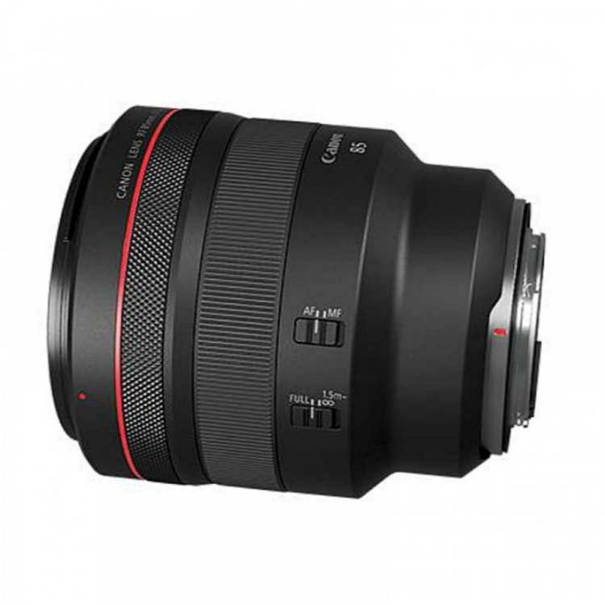
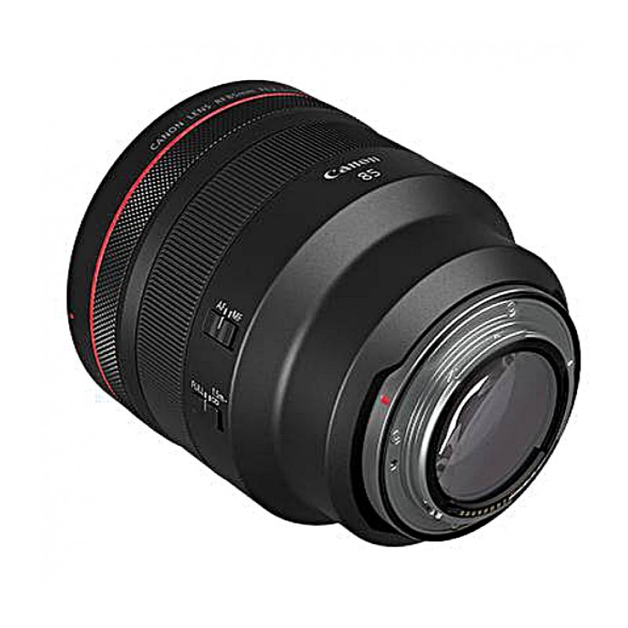
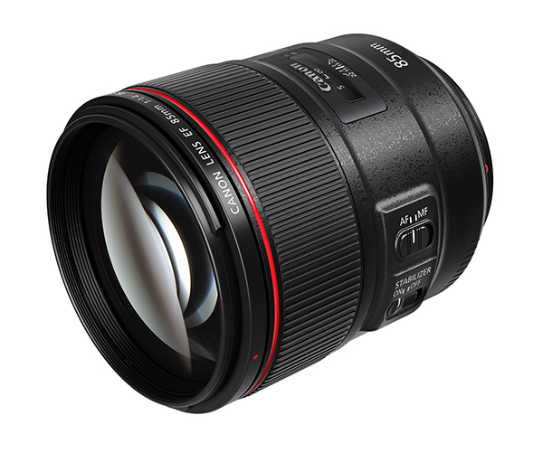
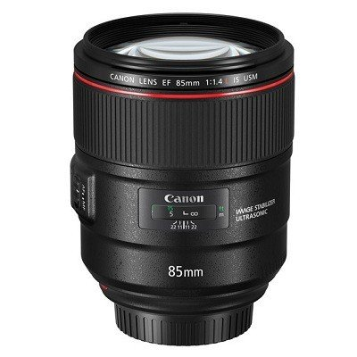
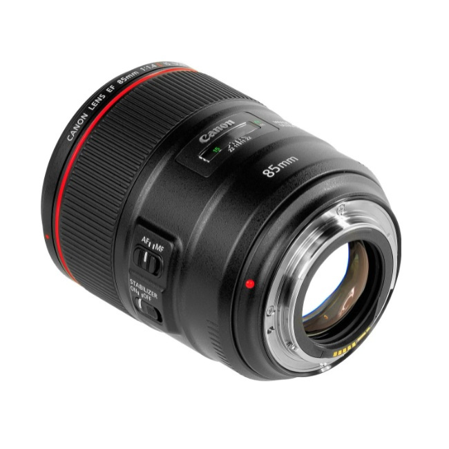
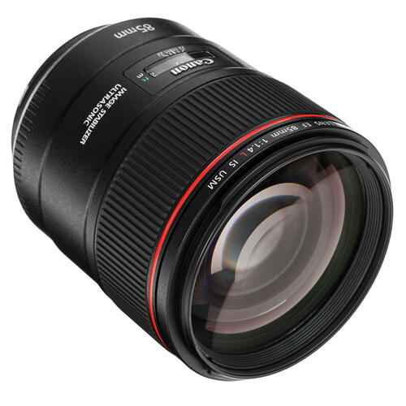

Canon Lens 85 mm RF
This fast portrait lens delivers sharp images with excellent contrast and colour rendition, and accurately captures fine detail, making it ideal for high-resolution sensors. Air Sphere Coating (ASC) suppresses internal flare and ghosting, while the large f/1.4 aperture enables shallow depth of field.






Canon Lens 85 mm RF
1999$
Description: This L-series lens features an advanced optical design and offers an ideal set of parameters for creative portrait photography.